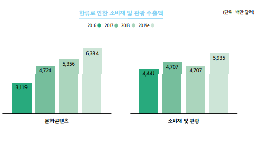

한류는 좁게는 음악, 영화, 드라마 같은 대중문화부터 시작하여 넓게는 패션, 화장품, 음식, 관광, 무술, 산업 등 대한민국의 문화가 세계에 알려지는 현상을 뜻한다. 한류라는 용어는 중화권에서 1990년대 후반 H.O.T. 신드롬이 일어나고, 한국의 아이돌 댄스 그룹과 한국 드라마가 중화권에서 청소년층에게 인기를 끌면서 생겨난 신조어다.
한류 열풍의 성공요인은 우리나라 문화콘텐츠의 경쟁력과 유튜브 등 SNS(Social Networking Service)를 통한 콘텐츠의 해외수요 증가로 볼 수 있다. 문화콘텐츠의 경쟁력이란 가창력과 안무, 외모, 패션 등 종합적인 매력을 바탕으로 높 은 완성도를 말한다. 이들은 어린 시절부터 장기간의 트레이닝 과정을 거쳐 실력과 이미 지를 구축하여 데뷔하고 있다. 배우나 가수 등 스타의 매력은 한류의 주요 경쟁력이며 이들이 만들어내는 이슈가 다시 한류에 대한 관심을 모으는 고리역할을 하고 있다. 욘사 마를 비롯하여 장근석은 일본 여성의 이상형으로 선정되기도 하고 그들의 의류, 화장품, 한식, 한국어 교육으로까지 영향력이 미치고 있다. 그리고 소셜 미디어의 발달로 쉽고 빠르게 전 세계적으로 한류를 홍보하고 전파되고 있다. 국내 유명 기획사들이 유튜브에 올린 홍보 영상을 전 세계 수많은 한류 팬들이 보면서 이를 다른 사람들에게 전파하고 좋아하는 한류 스타들에 대한 자료는 트 위터와 페이스북의 국내 팬들을 통해 손쉽게 접할 수 있다. 이러한 SNS의 보급은 지난 4월 프랑스 루브르 박물관 앞에서 열린 ‘SM타운 월드투어 인 파리’의 추가공연을 요구하는 팬들의 시위에서도 알 수 있다. 이들은 색다르게도 시 위 영상을 유튜브로 촬영해 온라인에 올림으로써 더욱 많은 사람들의 호응을 얻었다. 말 그대로 소셜 미디어가 한류 열풍을 확산시키는 통로 역할을 하는 셈이다.
한류로 인한 문화콘텐츠 수출액과 한류로 인한 소비재 및 관광 수출액을 합한 ‘한류로 인한 총 수출액’은 지 난 3년간 매년 그 수치가 증가했으며 그 증가 폭도 커졌다. 2016년에 약 76억 달러였던 ‘한류로 인한 총 수 출액’은 2018년에 전년 대비 6.9% 증가해 98억 달러를 기록했다. 2018년의 증가율은 9.1% 로 수출액이 약 101억 달러로 올랐고, 2019년의 수출액은 약 123억 달러로 추정되며 이 규모는 2018년에 비해 22.4% 증가 한 것이다. 그리고 2019년 우리나라 총 상품수출액이 5,423억 달러로 전년 대비 10.3% 감소했지만 한류로 인한 수출액이 오히려 22.4% 증가한 것은 한류가 문화콘텐츠 상품과 관광 부문에 끼친 영향이 해당 품목들 의 수출에 크게 기여했기 때문으로 추정된다.
